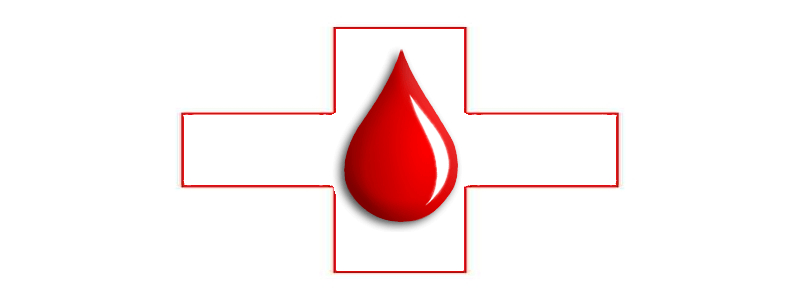

The gift of blood is the gift of life...
BLOOD BANK
BLOOD BANK
Why should I donate blood?
A blood donation truly is a “gift of life” that a healthy individual can give to others in their community who are sick or injured. In one hour’s time, a person can donate one unit of blood that can be separated into four individual components that could help save multiple lives.
Safe blood saves lives and improves health. Blood transfusion is needed for:
women with complications of pregnancy, such as ectopic pregnancies and haemorrhage before, during or after childbirth;
children with severe anaemia often resulting from malaria or malnutrition;
people with severe trauma following accidents; and
many surgical and cancer patients.
©2013 Medi-Friend. Developed and maintained by Automatons